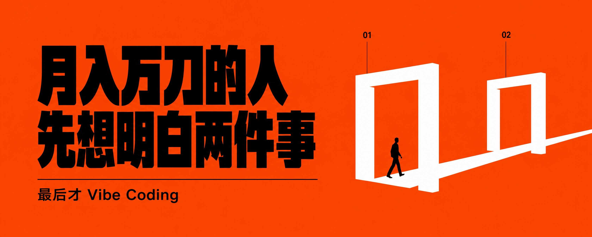
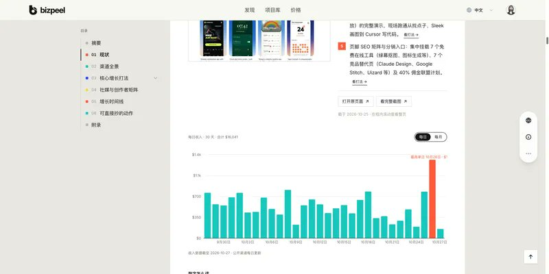
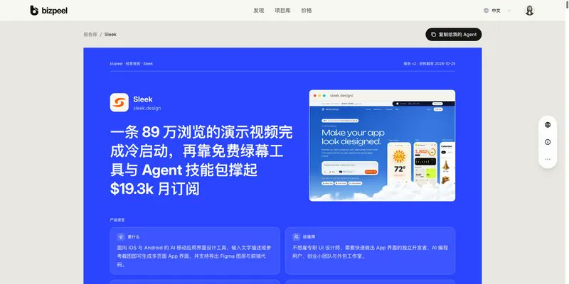
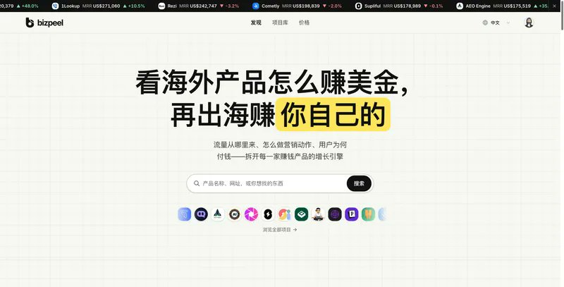
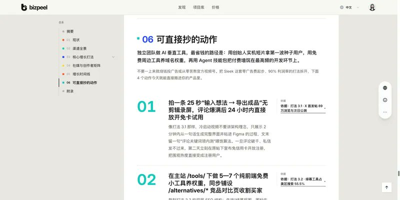
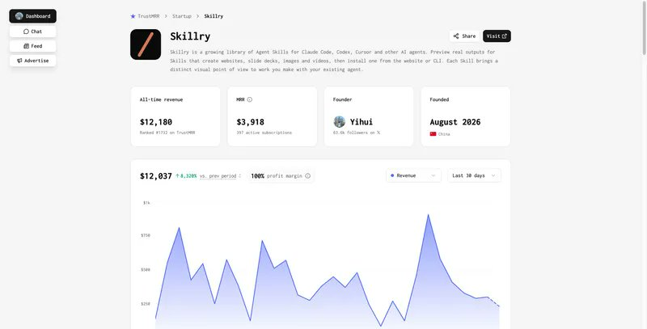
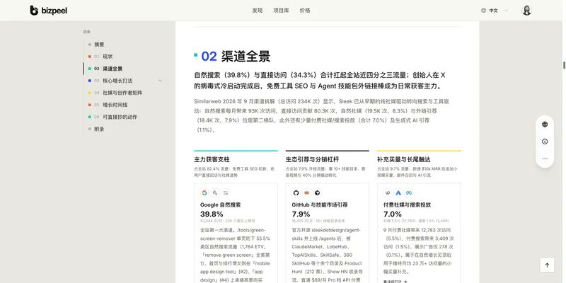
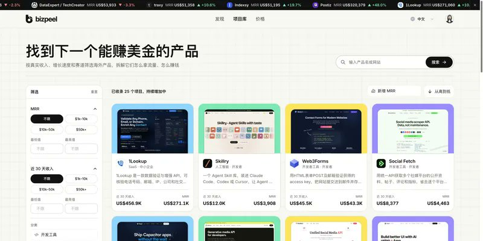
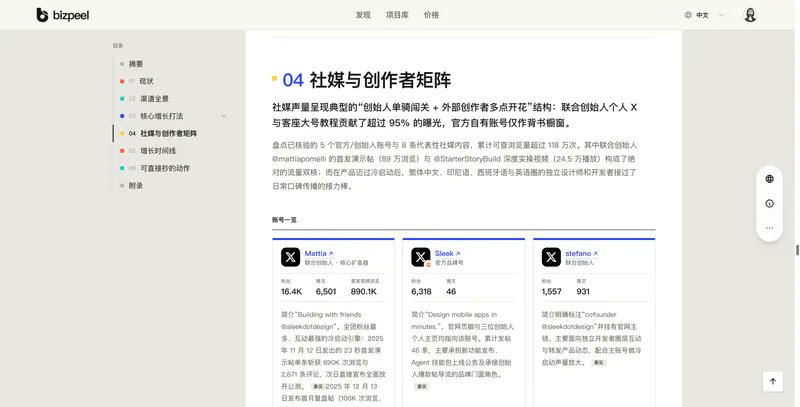

我的新产品 Skillry 上线 1 个月，拿到了 400+ 个活跃付费订阅，近 30 天收入做到了 $12,037（MRR $3,918），当个产品算是正式跨过了“月入万刀”这条线。

现在 Vibe Coding 真的太爽了。以前要写一个月的 SaaS，现在打开 Codex 或 Claude Code，接上 Stripe 或者 Waffo，一个周末就能上线收款。
但残酷的真相是：写代码的速度变快了 10 倍，做出“0 付费0用户”产品的速度也快了 10 倍。
绝大多数独立开发者亏钱，不是因为代码写得不好，而是顺序做反了——大家总是先把产品写出来，上线后发现没人买，才开始头疼怎么营销，最后才发现这个商业模式根本赚不到钱，我这两年做独立开发踩了很多这样的坑。
所以现在我写第一行代码之前，一定会先去把同赛道已经赚钱的产品扒一遍，逼自己想明白 2 件事：
- 商业模式怎么转（卖什么？怎么定价？怎么持续盈利？）
- 营销打法怎么抄（第一批付费客户从哪来？怎么营销增长？）
想通了这两件事，最后才决定这个产品做不做、才去 Vibe Coding。
接下来我以我的 Skillry 举例，来说明这两件事的重要性。（求个点赞，基本把底裤都给分享出来了！）

第 1 件事：先想明白商业模式
大家今年年初接触“小龙虾”的时候，应该已经看到过一大堆 Skill 集合站 了。
当时很多人一窝蜂去搭各种 Skill 导航、抓几千个开源 Skill 往网站上一放，看起来网站内容很丰富，但真相是：绝大部分 Skill 集合站根本不赚钱。
原因很简单：普通的规则脚本和通用提示词，大家去 GitHub 免费复制就行，或者让 AI 自己写只要 10 秒钟，根本没有人会为“信息搬运和汇总”掏钱。
那么问题来了：同样是做 Skill，Skillry 到底怎么卖才能真正盈利？
这就回到了我想明白商业模式的第一条原则：不要自己去发明一个没人验证过的商业模式，去找一门早就被证明能赚大钱的老生意，换上 AI + Agent时代的新载体。
如果卖 Skill 是一门从没人验证过的新生意（其实YouMind 有验证过），但本质是：Skillry 看着是在卖 Skill，但底层其实就是「卖有审美的模板」。
它和传统的卖 PPT 模板、卖网页模板是完完全全同一种生意。程序员和 Vibe Coder 最大的短板从来不是写逻辑，而是缺审美。AI 默认生成的网页、PPT 和视频有一股浓浓的“塑料味”，谁能帮开发者把审美调好、做成现成的模板，谁就能赚钱：
- Tailwind UI：卖顶级排版的官方组件模板（$299 买断），上线 5 个月就卖破 $200 万；
- Magic UI / Aceternity UI：卖 Linear 风格和 3D 炫酷动效组件模板，一个靠开源引流卖 $199 终身版（5,000+ 付费开发者），一个连代码都不开源，光靠 X 上的动效演示就做到 月入 $6 万–$10 万美金；
- 21st.dev：把这些高审美组件和付费模板（$29–$69）通过 MCP 直接塞进 Codex / Claude Code，迅速成为 AI 编程圈最火的组件市场之一。
所以，把调好审美的网页、PPT 和宣传片动效封装成 Skill 卖给开发者，这门生意天生就跑得通，特别是因为 Claude Code / Codex 这类 Coding Agent工具，带来了不少新的开发者。
但光知道“卖模板能赚钱”还不够。同样是做模板和 Skill 站，怎么定价、做买断还是做订阅，差距极大。
我在动手前，用 BizPeel 拉出了同赛道 7 个产品的真实收入数据做了一次对比：
看完竞品的真实数据，你能立刻看懂 3 个商业模式上的真相：
- 纯一次性买断的老模板正在衰退 如果你只看网上的宣传，会觉得 ShipFast（$199 的 Next.js 代码样板，累计卖了 $127 万）依然是神作。但看它近 30 天的真实流水，现在一个月只剩 $1,694。同样打包卖 Prompt 模板的 God of Prompt（累计 $55.8 万），MRR 也在掉，甚至已经挂牌出售了。如果只看历史总榜去抄一个买断制老模板，你一进场就是夕阳期。
- 当下持续赚钱的，都在走「订阅制 + 给 AI 工具直接用」 看最近还在赚大钱的同行：Sleek（AI 生成 App 界面，近 30 天收入 $16,684，MRR $19,110）、TypeUI（给 AI 编程工具喂设计风格和组件，MRR $3,519 且在增长），还有我的 Skillry（近 30 天收入 $12,037），全都是在走“给 AI 工具直接调用的设计资源 + 订阅制”这条路。
- 越聚焦具体场景的结果交付，付费转化率越高 这里有一组很有意思的对比：TypeUI 和我的 Skillry 都是给 AI 编程工具提供设计能力，但 TypeUI 偏向底层通用 UI 组件与图标，近 30 天收入是 $3,429；而 Skillry 直接聚焦“有审美的完整网页、演示文稿与宣传片动效”这类拿来就能交付的成品，近 30 天收入做到了 $12,037（超过前者的 3.5 倍）。
再看另一个产品 Low Content AI（专卖亚马逊 KDP 低内容图书模板），几乎不做泛流量 SEO，单靠切准亚马逊卖家这一类刚需人群做垂直订阅，近 30 天收入就高达 $14,900（累计 $64.6 万）。

在写代码之前把这些数字看明白，你就知道自己的产品该定什么价、该卖订阅还是买断、该切哪类痛点才最容易收到钱。
第 2 件事：再想明白怎么营销
商业模式算过账了，下一步还是别急着写代码。先问自己第二个问题：
如果产品明天上线，我的第一批付费客户去哪找？
最稳的办法从来不是自己闷头瞎猜，而是去拆上面那几个正在赚钱的同行，看它们的客户到底是从哪来的，看我自己能不能抄作业。
拿刚才提到的 Sleek（累计收入 $18.4 万、近 30 天收入 $16,684）举例，我主要看 3 个地方：
1. 看它的免费自然流量是怎么搞来的 打开 Sleek 的渠道拆解，它的 Google 自然搜索占了全站流量的 39.8%。
但它最聪明的地方不是去硬磕高难度大词，而是做了一个「免费绿幕去除小工具（Green Screen Remover）」——单这一个解决相邻小痛点的免费工具页，就吃下了它美区自然搜索流量的 55.5%，源源不断地把潜在用户导进核心产品里。

2. 看它的第一批种子用户是怎么冷启动的 顺着它的「04 社媒与创作者矩阵」往回翻：Sleek 的社媒声量是典型的“创始人单骑闯关 + 外部创作者多点开花”——联合创始人 Mattia 在 X 上发了一条只有 23 秒的实机演示视频，直接展示输入想法后不到 2 分钟生成多张统一风格移动页面、并可导出到 Figma 或代码，文末留一句“评论 sleek 领内测”喂饱算法。就这一条视频，打出了 89 万浏览、2,871 条评论，第二天顺势放开免绑卡公测，零广告费冲破了 $10k MRR；紧接着再联动 @StarterStoryBuild 实操视频（24.5 万播放）与多语种创作者接力放大。
3. 看完直接变成自己的行动清单 在报告最后的「06 可直接抄的动作」里，同行的打法已经被拆成了今天就能直接搬进自己产品里的具体动作：

看完这一页，你手里的营销计划就已经写好了：
- 我能不能也拍一条 25 秒以内的“输入想法 → 导出成品”无剪辑实机录屏来做首发冷启动？
- 我能不能在主站 /tools/ 下做几个纯前端免费小工具去吃自然搜索流量？
- 我能不能把核心能力封装成开源 Agent 技能包去各个技能市场导流？
4. 更狠的一招：在 Claude Code 或 Codex 里直接调 BizPeel MCP，批量扒完所有同行的获客打法 如果只看一两个产品还觉得不够稳，我现在最常用的做法是：直接在 Claude Code 或 Codex 里接上 BizPeel 的 MCP。
连网页都不用一个个点开，直接在终端里跟 Claude Code 或 Codex 说一句：
“帮我用 BizPeel MCP 找出所有卖模板、UI、Skill 相关的赚钱产品，把它们的获客渠道和具体获客方式全部拉出来对比，看看我们有什么可以直接借鉴的。”
AI 就会直接调用 BizPeel MCP 的搜索与报告接口，一次性把同赛道几家、甚至十几家竞品的主力获客渠道、冷启动爆帖打法、SEO 截流词和转化漏斗全部拉出来，结合你手头正在做的产品项目，直接给你生成获客执行方案的参考。
最后一步：决定做不做，再去 Vibe Coding
每次我有了一个新产品点子，走完上面这两步，做不做这个产品就非常清楚了：
- 底层商业模式被验证过吗？（同行最近 30 天是真的在赚钱，还是两年前赚过钱、现在一个月不到 $2,000？）
- 定价与转化逻辑算得过来吗？（是做一锤子买卖，还是能像 Sleek、Skillry、Low Content AI 那样做成高复购订阅？）
- 它的核心获客动作，我明天上线能直接复制吗？
如果这 3 个问题全都能答上来，我才会打开 Claude Code / Codex 开始 Vibe Coding。而且因为前两步已经想透了，写第一行代码的时候，连首页怎么写、定价定多少、第一条宣传视频拍什么都已经胸有成竹。
如果答不上来，哪怕代码 1 天就能写完，我也会直接放弃——因为省下的是后面几个月的营销获客时间。
最后：一个赚美金神器——BizPeel
你可能会好奇：上面这 7 个产品的真实近 30 天流水、MRR 涨跌对比，甚至连人家靠哪个免费小工具截流 SEO、哪条 23 秒视频完成冷启动，我是从哪扒出来的？
这里直接给大家推荐这个产品——BizPeel（官网：https://bizpeel.com）。我现在每次动手做新产品、或者帮自己的产品找增长打法之前，都会先用它把同赛道的竞品彻底扒一遍。
在 BizPeel 里，你可以直接用两种方式给自己的产品探路：
- 直接在网页上看竞品的完整拆解报告：不止看真实验证过的 MRR 和近 30 天每日流水，还能一页看清它的收费模式、渠道全景占比、核心增长打法、冷启动爆款原帖、增长时间线以及整理好的「可直接抄的动作」。
- 把 BizPeel MCP 直接接进 Claude Code / Codex：文章前面那组 7 个模板和 Skill 站的真实收入对比，以及同类产品的获客渠道横向拆解，就是我直接在 Claude Code / Codex 里调用 BizPeel MCP 搜完同类产品、让 AI 一次性帮我拉出来的。你在写代码之前，完全可以让 Agent 先调 BizPeel MCP 把同赛道赚钱的产品筛一遍、把获客打法抄明白，拿定主意再开工。
下次当你脑子里冒出一个新 Idea、手痒想立刻打开编辑器 Vibe Coding 的时候，先停下来花 10 分钟去 BizPeel（https://bizpeel.com）看一眼别人是怎么赚钱、怎么获客的。
先想明白这 2 件事，你离月入万刀就近了一大半。


